Parts and Materials Required
- Proper PPE
- Bench Pads
- DI Water
- INCUBATOR BELT
- 3 mm Hex Wrench
- 2.5 mm Hex Wrench
- 2.5% - 3.5% Sodium Hypochlorite Solution
Time Required
- 1 hour
Procedure
|
|
MTUs may be present in module. It is necessary to remove all MTUs to avoid contamination. |
- Put on proper PPE.
- Power on the Panther System and PC.
- Start Panther Main and allow system to initialize.
- Unload all MTUs from the Panther System.
- Shutdown the Panther System and PC.
- Unscrew the Luminometer Injector.
- Open the Mid-Bay Drawer.
- Remove the incubator bands and cap retainer.
 Disconnect all cables from the Incubator PCB (label or take a photo if needed to remember connector locations).
Disconnect all cables from the Incubator PCB (label or take a photo if needed to remember connector locations).
- Remove the Incubator cover and fan shroud, set aside.
- Visually verify that there are no MTUs in the Incubator.
- Prepare a work surface.
- Clean a flat and stable surface with 2.5% - 3.5% sodium hypochlorite solution.

Note — Do not allow the sodium hypochlorite solution to dry. - Wait 1 minute.
- Clean the surface with DI water.
- Place bench pads on the cleaned work surface.
- Clean a flat and stable surface with 2.5% - 3.5% sodium hypochlorite solution.
- Remove the Incubator and place on a bench pad.
Note — If RTFs are installed on an Amplification Incubator, then they must be removed and set aside prior to starting the belt replacement. Place the Incubator upside down on the clean bench pads and carefully remove ALL RTF's. - Remove the baffle with fan still attached.
Note: It is not necessary to remove the fan from the baffle prior to removal.
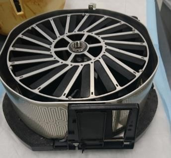
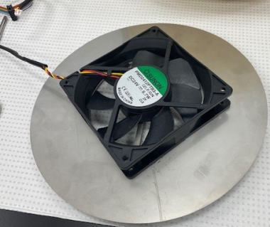
- Turn the incubator over.
- Remove the 3 feet securing the foam bottom to the bottom of the Incubator with a 3 mm hex wrench. Mark the orientation of the two side feet, this will help during the reinstallation process.
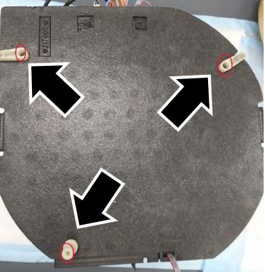
- Lift and remove the foam bottom.
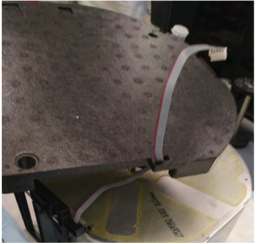
- Remove the Door Assembly.
- Remove the motor.
- Loosen the 3 screws that secure the motor with a 2.5 mm hex wrench.
Note — Hold the motor with one hand while loosening the screws so that it doesn't fall when freed. - Tilt the motor to free the teeth from the belt. If the pulleys or roller bearings fall off, save for re-installation.
Note — The 2 screws that hold the metal clip in place can just be loosened just enough to free the motor, but keep the clip in place so it doesn't have to be re-installed later. 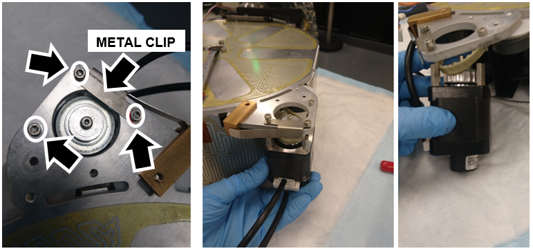
- Flip the Incubator over.
- Remove the side heater and set aside:
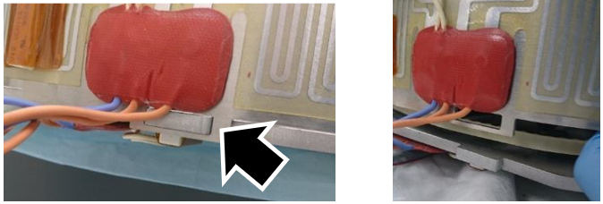
- Remove the old belt and place the New Belt around the carousel and between the 2 pulleys as shown.
Note — Remember to return the pulleys to their proper place. 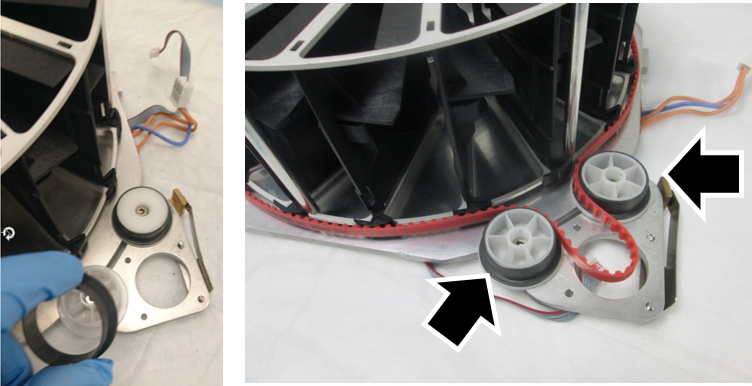
- Install the belt and motor:
- Release the tension on the tensioner pulley with a few turns using a 3 mm hex wrench.
Note — Don't completely remove the screw, just loosen. 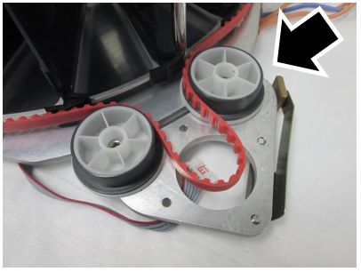
- Tipping the motor towards the carousel, carefully manipulate the belt around the teeth of the motor.
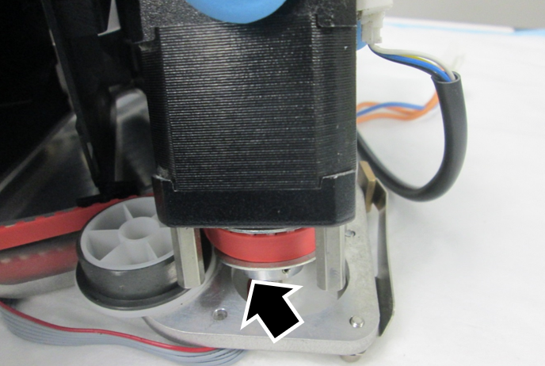
- Line up the standoffs on the motor with the screw holes. Tip the Incubator slightly up to allow access to the screws beneath the motor.
- Secure the motor with the 3 screws.
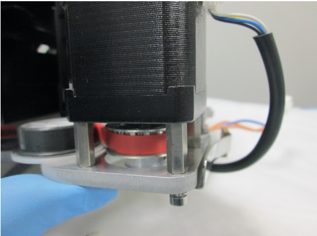
- The belt will likely be improperly seated along the carousel. To properly seat the belt:
- Slowly rotate the carousel clockwise.
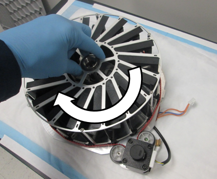
- Gently push the belt down over the carousel teeth as the belt enters the tensioner pulley.
- Check that the belt teeth are properly positioned in the carousel teeth as the belt leaves the idler pulley.
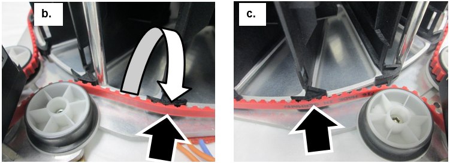
- Lightly tighten the tensioner pulley.
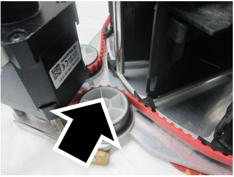
- Put the side heater back on the side of the Incubator.
Note — Ensure the heater is firmly seated around the base and not angled up with any gaps. - Verify the carousel rotates smoothly and the teach pin does not come in contact with the inside of the heater frame.
- Re-install the Door Assembly.
- Re-install the foam bottom.
- Re-install the incubator feet.
- Re-attach the fan and baffle.
- Re-install the foam housing on the incubator.
Note — If RTF's were installed on the Amplification Incubator, re-install the RTF's. - Reconnect all the cables to the PCB.
- Re-install the Incubator Module.
- Complete the Incubator Belt Tensioning procedure.(After the incubator has reached temperature.)
- Complete the Incubator Slot Alignment procedure.
- Teach the Linear Distributor to the Incubator.
- Verify the Incubator Slot Alignment procedure.
Note — If the belt was replace on the Amplification Incubator, complete the RTF Alignment procedure.

Verification
- Complete an Operational Qualification (OQ) for any affected incubators.
 button at the top of the page to send feedback, comments, or change requests.
button at the top of the page to send feedback, comments, or change requests.